חיפוש מיודע — יוריסטיקות, Greedy ו-A*
⏱ זמן משוער: 70 דק'
0. האינטואיציה — למה "עיוור" זה מבזבז זמן
חיפוש לא מיודע (BFS, DFS, UCS) מתייחס לכל קודקוד בחזית באותה מידה — אין לו שום מושג לאן "כדאי" להתקדם, והוא פשוט מתפשט לכל הכיוונים. זה עובד במרחבים קטנים, אבל ברגע שהמרחב גדל, הביצועים קורסים. חיפוש מיודע (informed search) פותר את זה על ידי הזרקת ידע ספציפי לבעיה לתוך תהליך החיפוש — פונקציה היוריסטית שמעריכה, לכל קודקוד, כמה הוא "קרוב" למטרה.
כל אלגוריתמי החיפוש המיודע שייכים למשפחה אחת: Best-First Search. הרעיון המשותף: לכל קודקוד n מחשבים f(n) — ציון שמשקף כמה הוא "טוב" — ומנהלים תור עדיפויות (Priority Queue) שממנו תמיד מפתחים את הקודקוד עם ה-f הנמוך ביותר. מה שמבדיל בין אלגוריתם לאלגוריתם הוא אך ורק הבחירה של f(n).
לאורך כל הפרק נשתמש בדוגמה אחת ויחידה — מפת רומניה — עם היוריסטיקה hSLD(n) = מרחק אווירי (Straight-Line Distance) מהעיר n לבוקרשט (המטרה). מרחק אווירי הוא בחירה טבעית: אי אפשר לנסוע בקו ישר על כביש, אז המרחק האווירי הוא תמיד תחתון (או שווה) למרחק הדרכים האמיתי.
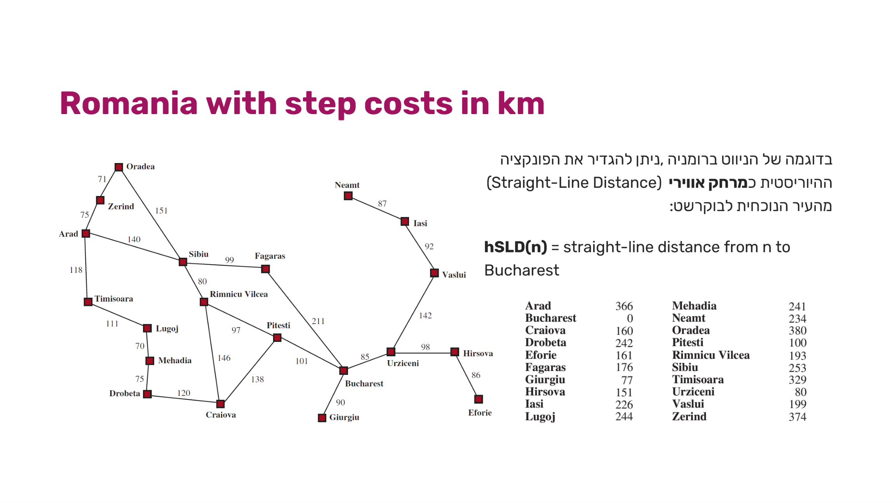
מקור: 05-informed-search.pdf (עמ' 1–6)
1. Greedy Best-First Search — חמדנות טהורה
האלגוריתם הראשון במשפחה בוחר f(n) = h(n) בלבד. זהו חיפוש "חמדן" (greedy) במובן המדויק: בכל שלב הוא מפתח את הקודקוד שנראה הכי קרוב למטרה ברגע הזה, ומתעלם לחלוטין מכמה עלה להגיע אליו עד עכשיו. אין לו זיכרון של "השקעה" — רק תחזית קדימה.
עיקרון הבחירה: בכל שלב מפתחים את הקודקוד עם ה-h(n) הקטן ביותר מבין העלים הפתוחים.
הרצה מלאה על רומניה (מ-Arad)
שלב 1: מפתחים את Arad. שלושת הבנים: Sibiu (h=253), Timisoara (h=329), Zerind (h=374). Sibiu הכי נמוך — נבחר.
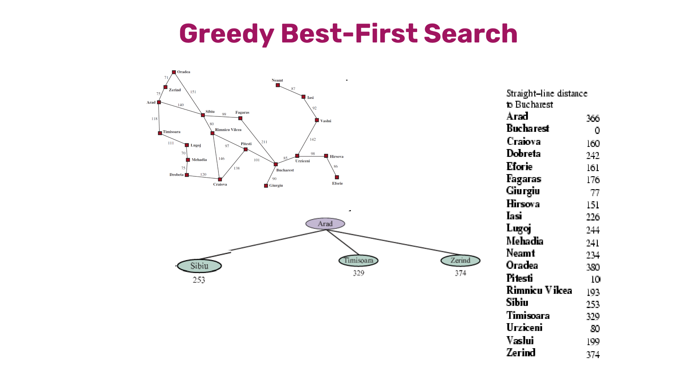
שלב 2: מפתחים את Sibiu. בניה: Arad (h=366), Fagaras (h=176), Oradea (h=380), Rimnicu Vilcea (h=193). מבין כל העלים הפתוחים (כולל Timisoara ו-Zerind מהשלב הקודם), Fagaras (h=176) הכי נמוך — נבחרת.
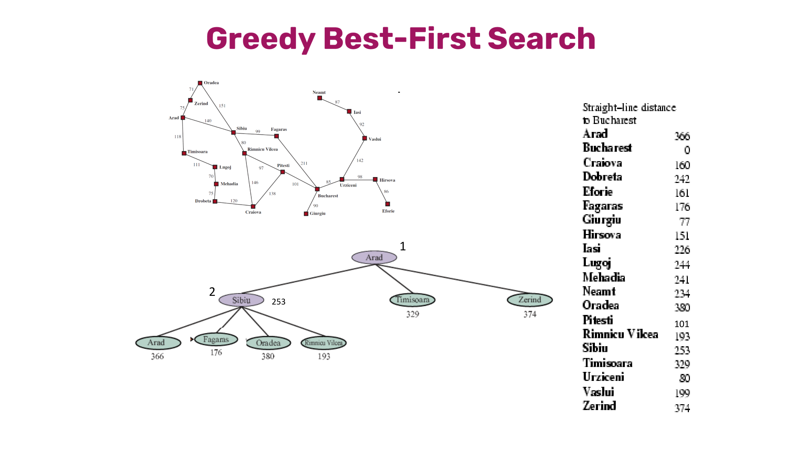
שלב 3: מפתחים את Fagaras. בניה: Sibiu (h=253, מצב חוזר) ו-Bucharest (h=0) — המטרה! האלגוריתם עוצר.
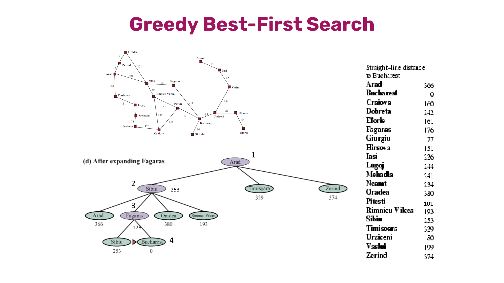
מקור: 05-informed-search.pdf (עמ' 7–12)
2. A* Search — f(n) = g(n) + h(n)
A* משלב את שני העולמות: את היתרון של Uniform Cost Search (האלגוריתם היחיד בין הלא-מיודעים שמבטיח אופטימליות, כי הוא ממיין לפי עלות מסלול מצטברת) עם היתרון של Greedy (כיוון לעבר המטרה).
הרצה מלאה על רומניה — עד לפתרון האופטימלי
שלב 1: מפתחים את Arad (g=0). הבנים:
Sibiu: f = 140 + 253 = 393 ← מינימלי, נבחר Timisoara: f = 118 + 329 = 447 Zerind: f = 75 + 374 = 449
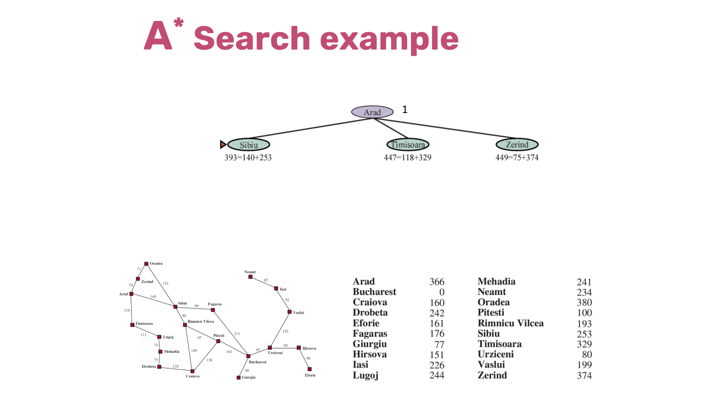
שלב 2: מפתחים את Sibiu. שימו לב ל-Arad שמתגלה מחדש כבן — זהו מצב חוזר ומסומן בקו חוצה:
Arad (חוזר): f = 280 + 366 = 646 Fagaras: f = 239 + 176 = 415 Oradea: f = 291 + 380 = 671 Rimnicu V.: f = 220 + 193 = 413 ← מינימלי, נבחר
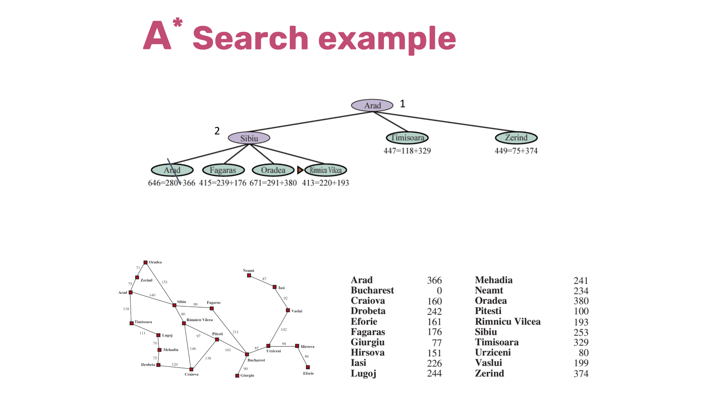
שלב 3: מפתחים את Rimnicu Vilcea:
Craiova: f = 366 + 160 = 526 Pitesti: f = 317 + 100 = 417 ← מינימלי, נבחר הבא Sibiu (חוזר): f = 300 + 253 = 553
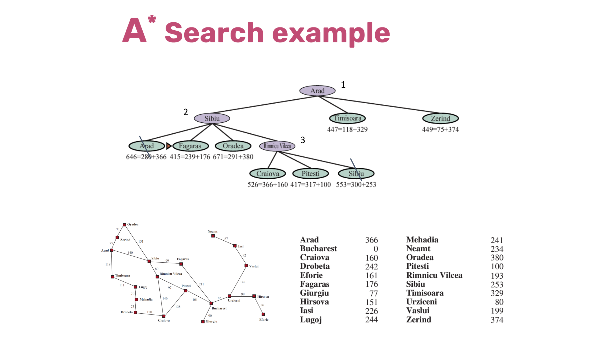
שלב 4 — הרגע הדידקטי המרכזי: אבל לפני זה, בתור עדיין ממתין Fagaras (f=415) — נמוך יותר מ-Pitesti (417)! לכן קודם מפתחים את Fagaras:
Sibiu (חוזר): f = 338 + 253 = 591 Bucharest: f = 450 + 0 = 450 ← המטרה מתגלה! אך f=450 > f(Pitesti)=417
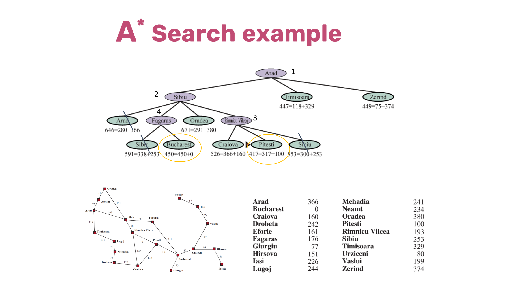
שלב 5 — סיום: מפתחים את Pitesti. מתגלה Bucharest דרך Pitesti עם f = 418 + 0 = 418 — נמוך מ-450, ולכן זו הכניסה החדשה עם ה-f המינימלי בתור. היא נבחרת לפיתוח והאלגוריתם עוצר.
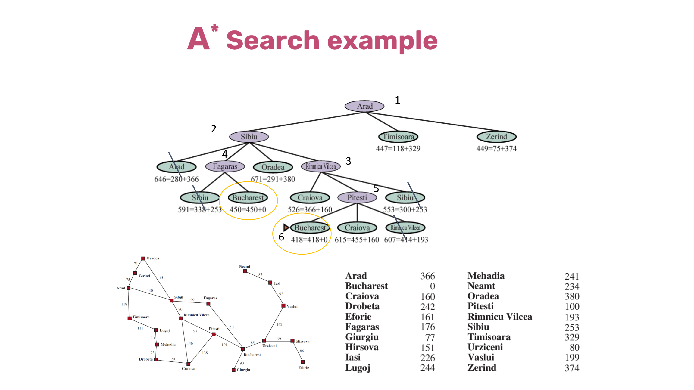
נסו בעצמכם: הריצו A* צעד-אחר-צעד על גריד, וצפו איך g, h ו-f מתעדכנים לכל תא ואיך המסלול הסופי נבחר.
מקור: 05-informed-search.pdf (עמ' 13–20)
3. מה קורה כשהיוריסטיקה מפריזה?
נבצע ניסוי מחשבתי על אותה דוגמה: נשנה את h(Pitesti) מ-100 ל-200 (המרחק האמיתי מ-Pitesti לבוקרשט הוא כאמור 0 — אבל נניח שההיוריסטיקה "מפריזה" ומחזירה 200 עבור Pitesti). כעת f(Pitesti) = 317 + 200 = 517.
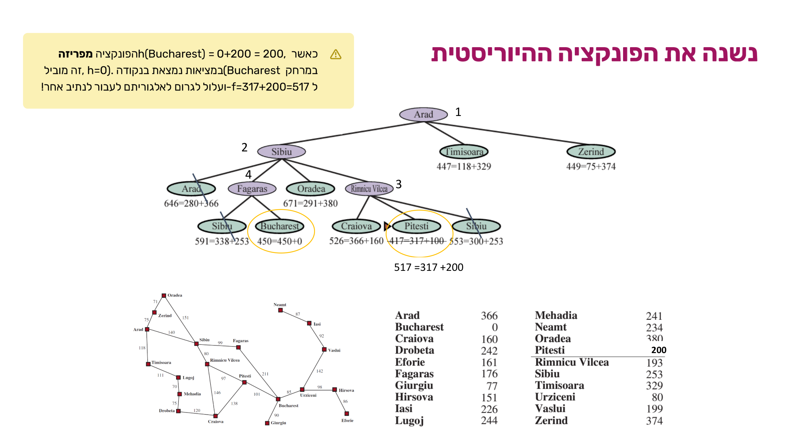
זה מוביל אותנו לשאלה המרכזית של הפרק: איזו תכונה של h מבטיחה שזה לא יקרה?
מקור: 05-informed-search.pdf (עמ' 21)
4. קבילות (Admissibility) — הערובה לאופטימליות
המשמעות האינטואיטיבית: היוריסטיקה קבילה לעולם אינה מפריזה — היא "אופטימיסטית" תמיד. hSLD קבילה כי מרחק אווירי הוא תמיד קטן או שווה למרחק הדרכים בפועל (אי אפשר לנסוע בקו ישר דרך הרים).
הוכחת האופטימליות — צעד אחר צעד
נניח שברשימת העלים יש קודקוד n שנמצא על המסלול האופטימלי שמסתיים ב-G (עלות C*), וגם יעד לא-אופטימלי G₂ ברשימה. נעקוב אחרי שרשרת האי-שוויונים:
f(G2) = g(G2) + h(G2) = g(G2) + 0 > C* // G2 לא אופטימלי, אז עלותו גדולה מ-C* f(G) = g(G) + h(G) = g(G) + 0 = C* // G עצמו על המסלול האופטימלי f(n) = g(n) + h(n) ≤ C* // h(n) קבילה: h(n) ≤ h*(n) ⟹ f(n) ≤ C* < f(G2) ⟹ A* לא יבחר את G2 לפיתוח
המסקנה: כל עוד קיים על המסלול האופטימלי קודקוד n עם f(n) ≤ C*, ו-A* תמיד בוחר את f המינימלי, הוא לעולם לא יבחר יעד לא-אופטימלי לפני שסיים את המסלול האופטימלי. זה בדיוק מה שקרה בדוגמת Pitesti/Fagaras: כל עוד ה-h קבילה, ה-f על המסלול האופטימלי לא יכול "לחכות" בתור יותר מדי זמן.
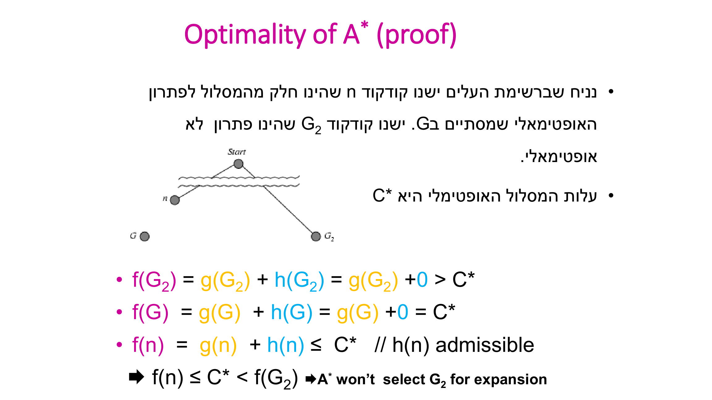
מקור: 05-informed-search.pdf (עמ' 22–24)
5. סיבוכיות זמן — בין UCS ל"פיתוח המסלול בלבד"
סיבוכיות הזמן של A* תלויה לגמרי באיכות ה-h. שני קצוות:
דוגמה מספרית — מקרה טוב (h מדויקת)
גרף עם 8 קודקודים A, E, I, B, F, J, C, G (G המטרה), שבו h שווה בדיוק לעלות האמיתית לכל קודקוד:
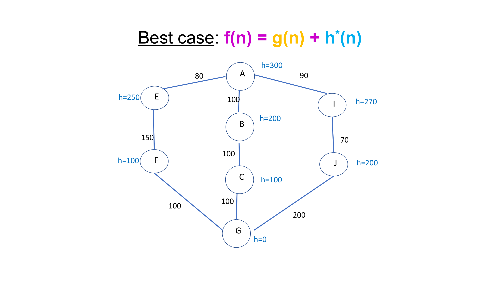
שלב 1 — פיתוח A: E: f=80+250=330; B: f=100+200=300; I: f=90+270=360. B מינימלי.
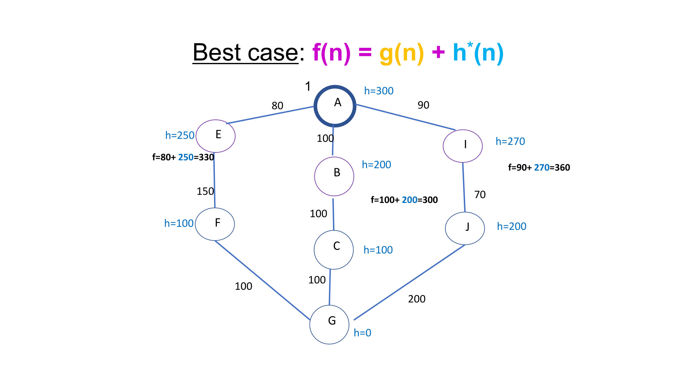
שלב 2 — פיתוח B: C: f=200+100=300. C מינימלי (300 < E:330, I:360).
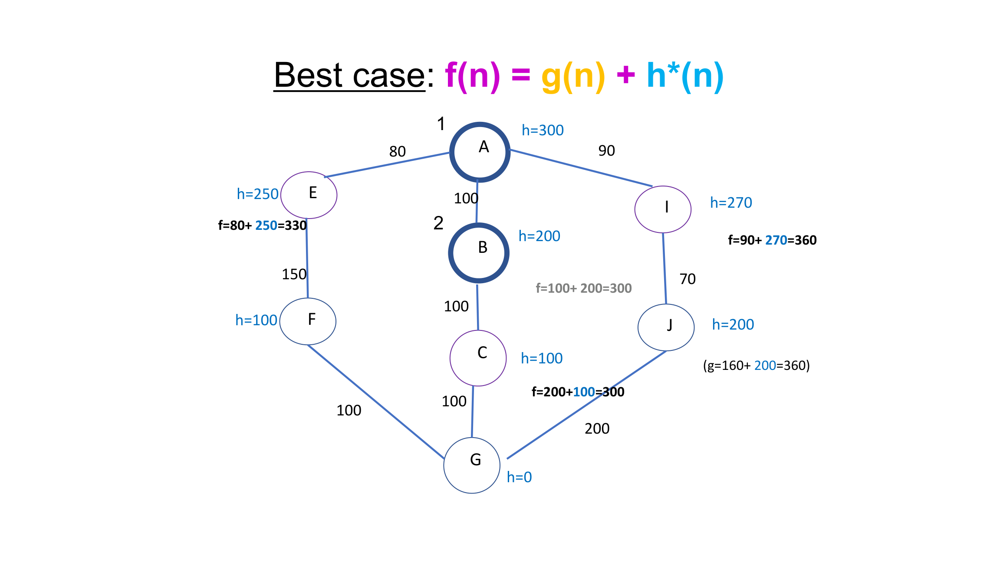
שלב 3 — פיתוח C: G: f=300+0=300.
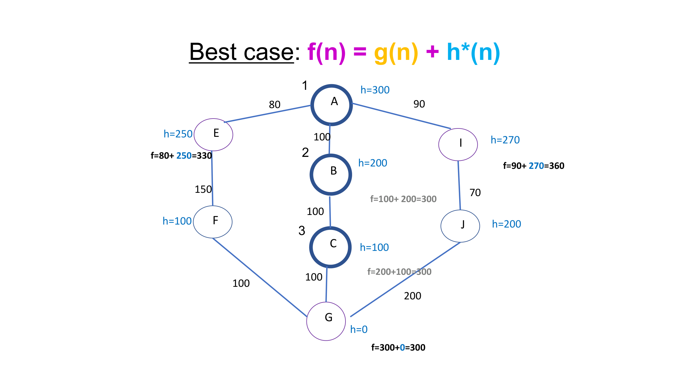
שלב 4 — G נבחר: המסלול A→B→C→G בעלות 300. שימו לב: E (330) ו-I (360) — הקודקודים שמחוץ למסלול האופטימלי — מעולם לא נפתחו.
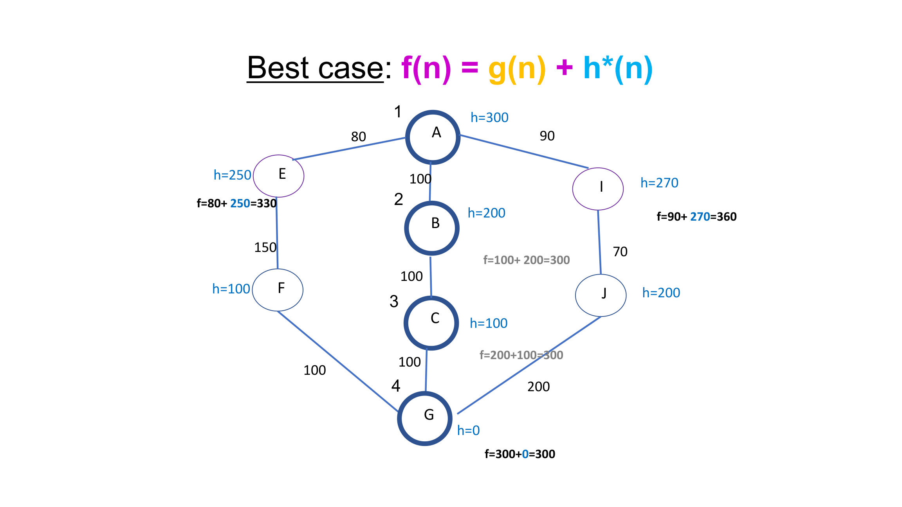
שאלה להעמקה — היוריסטיקה שמפריזה ב-k לכל היותר
נניח שידוע שהפונקציה ההיוריסטית h מפריזה בהערכה למרחק מהפתרון לכל היותר ב-k יחידות. כלומר: h(n) ≤ h*(n) + k לכל n. איזה פתרון יחזיר A*? יש להוכיח.
הטענה: A* יחזיר פתרון שעלותו C יכולה להיות גדולה מהפתרון האופטימלי C* לכל היותר ב-k יחידות, כלומר C ≤ C* + k.
הוכחה (מילה במילה מהמקור): פונקציית ההערכה של כל קודקוד שווה לעלות כל המסלול מהשורש עד למטרה דרך קודקוד זה. לכן אם העלות של המסלול האופטימלי היא C*, אזי הפונקציה f של כל קודקוד במסלול האופטימלי תהיה לכל היותר C*+k (כי h על מסלול זה מפריזה בלכל היותר k).
אם קודקודים אחרים יהיו בעלי ערך f נמוך יותר (כי בהם ה-h נמוכה מהאמת), האלגוריתם ימשיך איתם, אך יבחר במטרה דרך מסלול לא-אופטימלי רק אם העלות להגיע אליה היא עד C*+k — כי ערכים כאלה קיימים במסלול האופטימלי, וA* תמיד בוחר את הערך הנמוך ביותר. לכן C ≤ C*+k. מ.ש.ל.
הדגמה מספרית (k=30): אותו גרף כמו קודם, אבל עם h שמפריזה עד 30 יחידות:
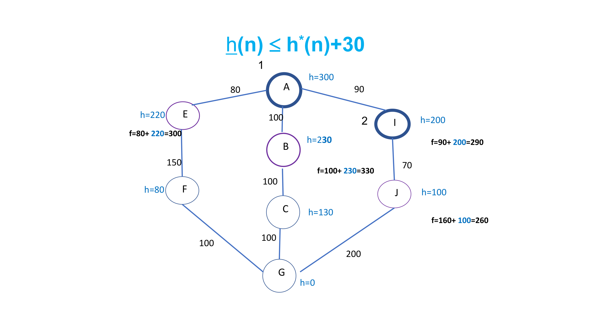
שלב 3: J: f=160+100=260 — מינימלי, J מפותח. מתגלה G דרך J: f=360.
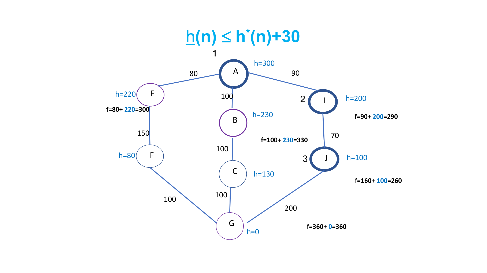
שלב 4: העלים כעת E:300, B:330, G(דרך J):360. E מינימלי — מפותח. מתגלה F: f=310.
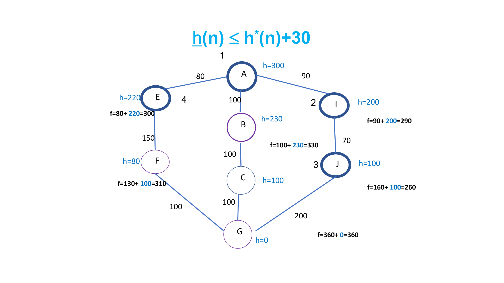
שלב 5: F (f=310) מינימלי (מול B:330, G:360) — מפותח. מתגלה G דרך F: f=330.
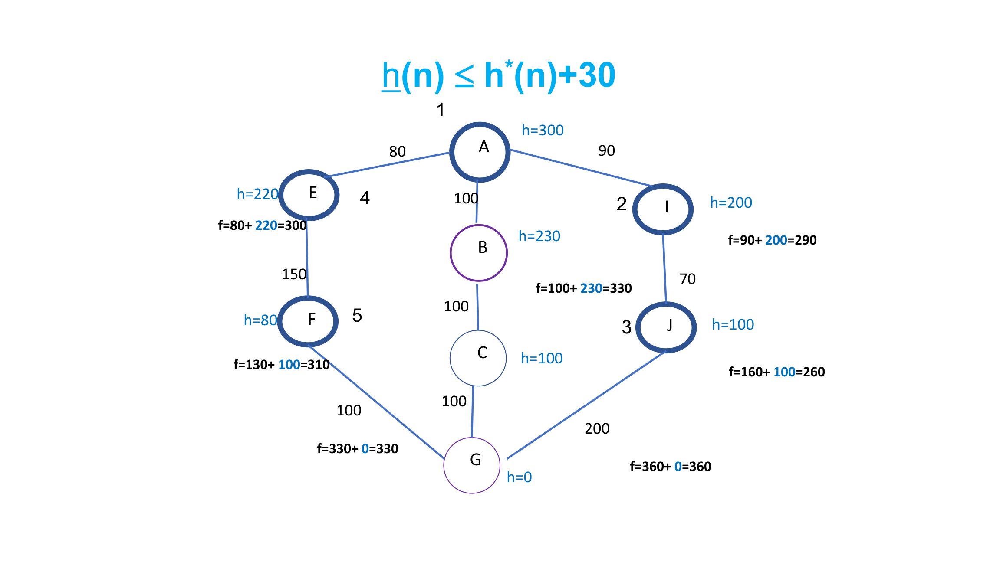
שלב 6 — סיום: העלים B:330, G(דרך F):330, G(דרך J):360. G נבחר (f=330, דרך F).
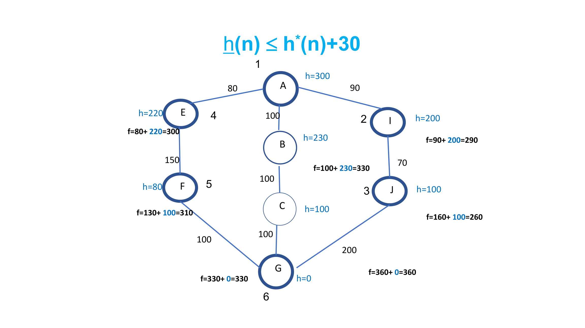
מקור: 05-informed-search.pdf (עמ' 26–43)
6. A* על גרף — כשה-Closed Set נושך
עד עכשיו דיברנו על Tree Search. כשמריצים A* על גרף (ולא עץ) — עם רשימה סגורה שמונעת פיתוח כפול של אותו מצב — מתעוררת בעיה חדשה.
שתי גישות לפתרון
גישה א' — עדכון מסלולים: כשמגיעים למצב שכבר נבדק בדרך זולה יותר, נעדכן את המסלול ונחזיר אותו לרשימה הפתוחה. לא פשוט למימוש — דורש תשתית נוספת למעקב.
גישה ב' — היוריסטיקה מונוטונית (עקבית): נדרוש מה-h תנאי חזק יותר מקבילות. בתנאי זה, כשמגיעים למצב לראשונה, הדרך שמצאנו אליו היא כבר האופטימלית — בדיוק כמו ב-UCS. זו הגישה הנפוצה.
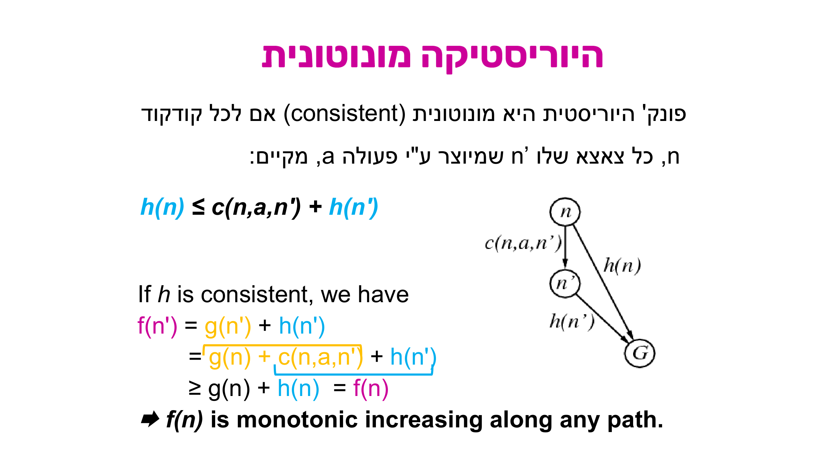
למה זה חשוב? עקביות מבטיחה ש-f(n) לא-יורדת לאורך כל מסלול:
f(n') = g(n') + h(n')
= g(n) + c(n,a,n') + h(n')
≥ g(n) + h(n) = f(n)
⟹ f(n) מונוטונית עולה לאורך כל מסלול
דוגמה: h לא-מונוטונית שגורמת לפיתוח מוקדם לא-אופטימלי
גרף פשוט: A–E (80), A–B (100), E–B (10), ו-B מוביל בסוף למטרה G. עם h(A)=300, h(E)=200, h(B)=180 — שימו לב: h(E)=200 > c(E,B)+h(B) = 10+180 = 190 — הפרת עקביות.
מה קורה: A מפותח (f=300). העלים E ו-B שניהם f=280 — B נבחר ומפותח עם המסלול הישיר (g(B)=100). רק אחר כך, כשמפתחים את E, מתגלה מסלול זול יותר אל B דרך E: g(B) = 80+10 = 90 < 100! אבל B כבר פותח ונסגר — מאוחר מדי.
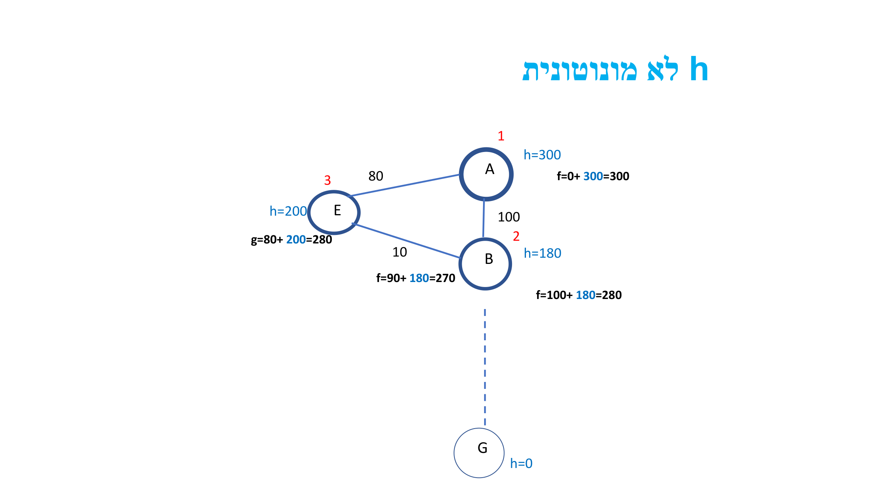
עכשיו נתקן: אותו גרף, אבל עם היוריסטיקה עקבית: h(A)=250, h(E)=190, h(B)=200 (בדקו: h(E)=190 ≤ 10+200=210 ✓). A מפותח (f=250). E (f=270) נבחר לפני B (f=300) — ומגלה את המסלול הזול אל B (f=290) לפני ש-B נפתח בכלל!
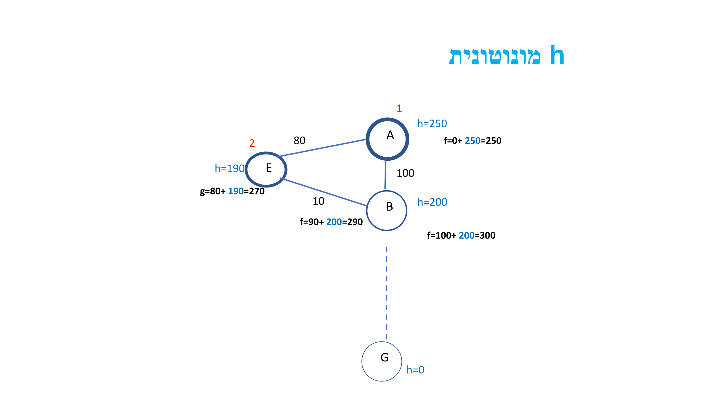
| חיפוש עץ | חיפוש גרף | |
|---|---|---|
| הדרישה מ-h | קבילה (h(n) ≤ h*(n)) בלבד | מונוטונית/עקבית (h(n) ≤ c(n,a,n')+h(n')) — תנאי חזק יותר |
מקור: 05-informed-search.pdf (עמ' 44–52)
7. IDA* — Iterative Deepening A*
הבעיה עם A*: הוא שומר רשימה פתוחה גדולה בזיכרון. IDA* פותר את זה באותה תחכום שבו Iterative Deepening פתר את בעיית הזיכרון של BFS: IDA* is to A* as ID is to BFS. במקום לשמור רשימה פתוחה, IDA* מריץ סדרה של חיפושי DFS מוגבלי-עלות.
איך זה עובד:
- קובעים תקרת עלות (limit).
- בכל איטרציה מחשבים f(n)=g(n)+h(n) לכל קודקוד.
- אם f(n) ≤ limit — מפתחים אותו.
- אחרת — גוזמים את הענף (לא מפתחים).
הפסאודו-קוד (VERBATIM)
A*LimitedSearch(problem, limit)
{ RecursiveA*LS(MakeNode(initialState(problem)), problem, limit) }
RecursiveA*LS(node, problem, limit)
{
cutoffOccurred = false
newLimit = ∞
if GoalTest(problem, node) = true
return Solution(node)
else if f(node) > limit
newLimit = min(newLimit, f(node))
cutoffOccurred = true
else
for each successor in Expand(node, problem)
result = RecursiveA*LS(successor, problem, limit)
here come the rest of the algorithm
return (cutoffOccurred, newLimit)
}
IterativeDeepeningA*(problem)
{
for limit = f(start node) to ∞
{
result = A*LimitedSearch(problem, limit)
if result ≠ cutoff
return result // optimal solution found!
limit = newLimit // jump to next threshold
}
}
הרצה מלאה על עץ דוגמה
עץ עם ערכי f בעיגולים: שורש 4, בנים 4, 26, נכדים 15, 26. איטרציה 1, limit=4: הבן השמאלי (f=4) מפותח, אבל שני בניו (15, 26) וגם הבן הימני (26) נגזמים — כולם >4. האיטרציה מסתיימת ללא פתרון; המינימום שנגזם (15) יהיה ה-limit הבא.
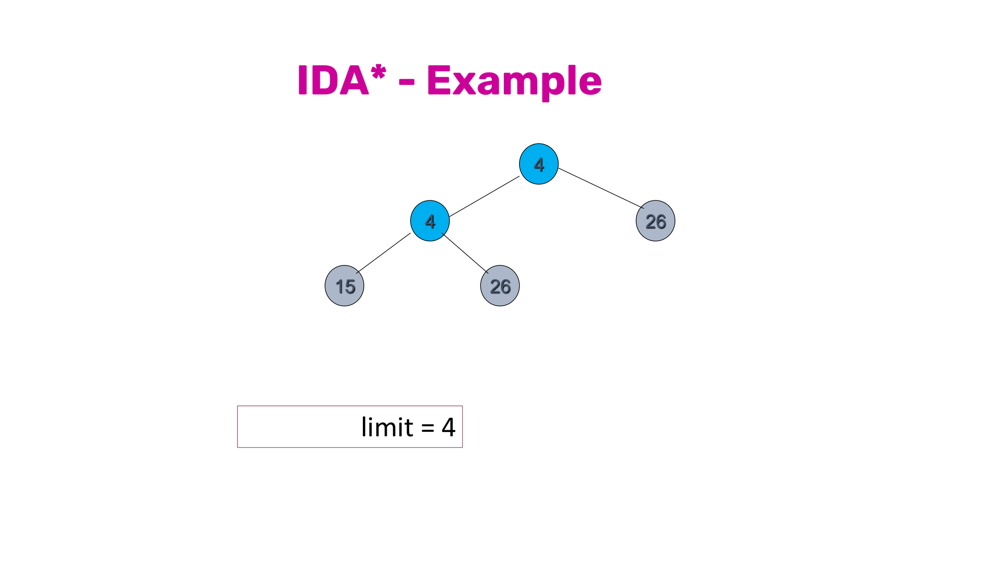
איטרציה 2, limit=15: העץ מתרחב עמוק יותר. מפתחים את כל הענף השמאלי (4→4→15→15), וגוזמים כל מה שמעל 15 (26, 27 בכמה מקומות). האיטרציה מסתיימת עם המינימום שנגזם = 26 — זה ה-limit הבא.
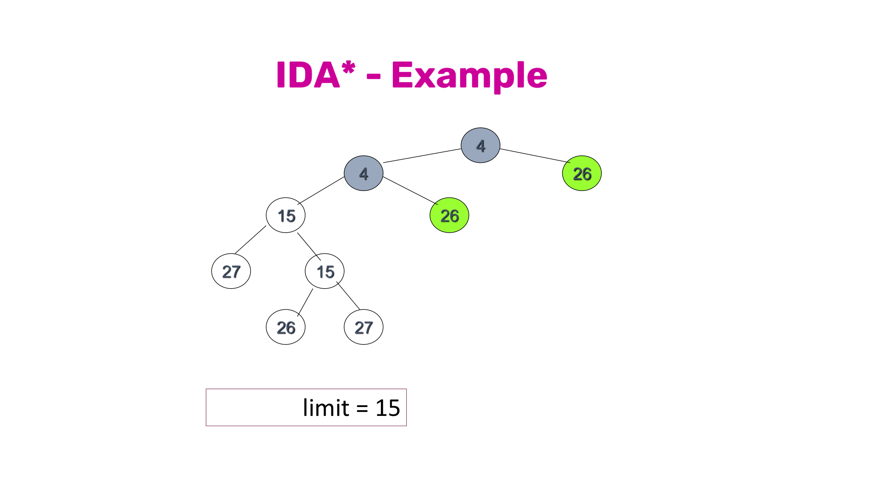
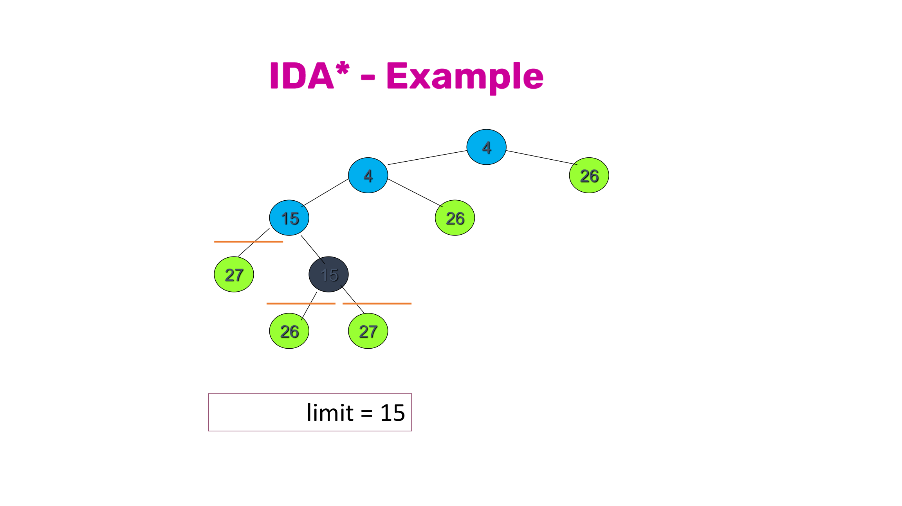
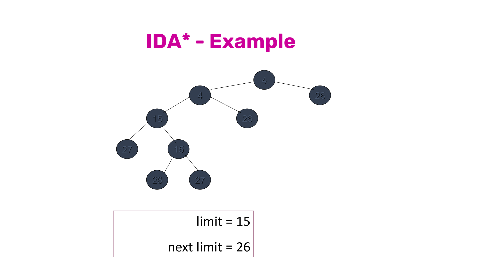
IDA* לעומת Iterative Deepening — טבלת השוואה
| ID | IDA* | |
|---|---|---|
| מהו האלג' שמפעילים? | DFS | DFS |
| איזה מדד חשוב לאלגוריתם? | הרמה שאליה הגענו (מדמה BFS) | עלות פיתוח f(n) מינימלית |
| מהו ה-limit? | מוגדר כרמה בעץ הפיתוח | מוגדר כערך f(n) |
| איך מקדמים את ה-limit? | מעלים ב-1 | מעדכנים לערך ה-f המינימלי שהיה גדול מה-limit הקודם |
| מספר קודקודים באיטרציה החדשה | משמעותית גדול מהקודמים — בערך פי 2 | ייתכן ועולה רק ב-1 |
| זמן ריצה | O(bd) | אקספוננציאלי |
מקור: 05-informed-search.pdf (עמ' 53–71)
8. איך ממציאים היוריסטיקה קבילה?
עד עכשיו קיבלנו את ה-h מוכנה. אבל איך בונים היוריסטיקה קבילה לבעיה חדשה? שני עקרונות מרכזיים.
שיטה 1 — בעיה מוקלת (Relaxed Problem)
בעיה מוקלת נוצרת ע"י השמטת דרישות מהבעיה המקורית. עלות הפתרון האופטימלי של הבעיה המוקלת היא תמיד היוריסטיקה קבילה (וגם עקבית!) לבעיה המקורית — כי כל פתרון לבעיה המקורית הוא גם פתרון חוקי לבעיה הקלה יותר, ולכן העלות המוקלת לא יכולה להיות גדולה מהאמיתית.
דוגמה קלאסית — ה-8-puzzle: הכלל המקורי הוא "אפשר להזיז אריח מ-A ל-B רק אם הם שכנים וגם B ריק". שתי הקלות אפשריות:
- השמטת "B ריק" בלבד (משאירים "שכנים") → h₂ = מרחק מנהטן.
- השמטת שתי הדרישות (גם "שכנים" וגם "B ריק") → h₁ = אריחים לא במקומם (Misplaced Tiles).
h₁(n) — סופרים כמה אריחים אינם במקומם היעד. h₂(n) — סוכמים, לכל אריח, את מספר הצעדים (אופקי+אנכי) עד מיקומו היעד. שתיהן קבילות — אף פעם לא מפריזות.
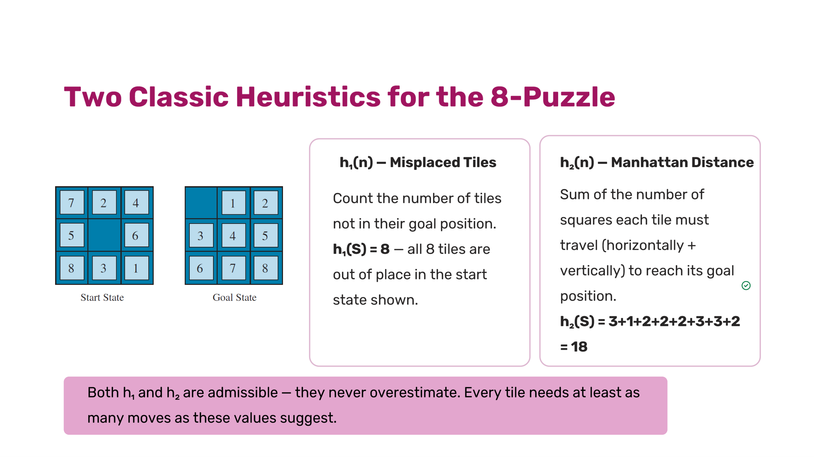
שיטה 2 — Pattern Databases
גישה שנייה: פותרים תת-בעיה במדויק (למשל, רק אריחים 1–4 מתוך ה-8-puzzle, מתעלמים מהשאר), ושומרים את כל עלויות הפתרון המדויקות בטבלת lookup (pattern database) בשלב preprocessing חד-פעמי. בזמן החיפוש, שולפים את הערך המתאים כהיוריסטיקה — קבילה, כי היא עלות מדויקת של תת-בעיה מוקלת, ובדרך כלל הדוקה (tight) יותר מ-Manhattan.
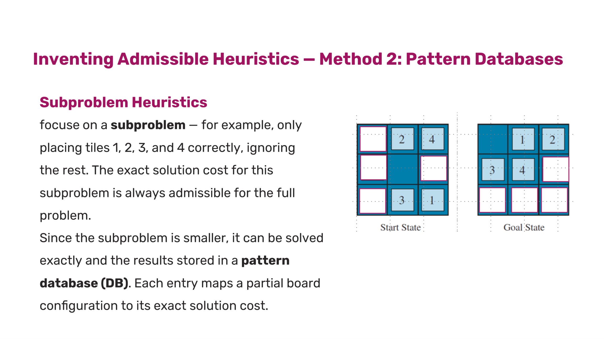
דומיננטיות (Heuristic Dominance)
ב-8-puzzle, h₂ (מנהטן) תמיד שולטת ב-h₁ (misplaced tiles), כי כל אריח לא-במקומו תורם לפחות 1 למרחק מנהטן שלו. ההשפעה על מספר הקודקודים שנפתחים דרמטית:
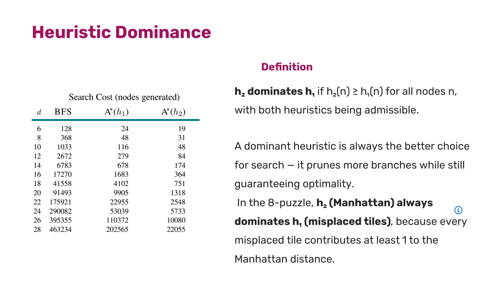
כשאין היוריסטיקה שולטת יחידה: נתונה קבוצה {h₁,…,h_m} שאף אחת מהן אינה שולטת בכולן — פשוט לוקחים h(n) = max(h₁(n),…,h_m(n)). המקסימום של היוריסטיקות קבילות הוא עצמו קביל, ושולט בכל אחת מהרכיבות שלו.
מקור: 05-informed-search.pdf (עמ' 73–86)
9. טבלת השוואה — Greedy מול A* מול IDA*
| תכונה | Greedy Best-First | A* | IDA* |
|---|---|---|---|
| שלמות | לא מובטחת ללא בדיקת מצבים חוזרים (עלול "להסתובב" כמו DFS) | כן — עם h קבילה (עץ) / עקבית (גרף) | כן — "עדיין שלם ואופטימלי (עם h קבילה/מונוטונית)" |
| אופטימליות | לא — הדוגמה הקלאסית: 450 במקום 418 ברומניה | כן — זו הטענה המרכזית שהוכחנו (h קבילה בעץ, עקבית בגרף) | כן — אותה הוכחה בדיוק כמו A* (f מבוסס limit חיתוך) |
| סיבוכיות זמן | תלוי מאוד באיכות ה-h; במקרה הגרוע דומה ל-DFS | גרוע: O(bm) (h=0, שקול ל-UCS) טוב: O(bd) (h=h* מדויקת) |
אקספוננציאלי — עלול לפתח קודקודים רבים שוב ושוב אם ערכי ה-f שונים בין קודקודים |
| סיבוכיות מקום | לא שומר רשימה פתוחה גדולה בהכרח — תלוי במימוש | אקספוננציאלית — שומר את כל הקודקודים שנוצרו ב-open/closed | ליניארית בעומק — "אין רשימה פתוחה; זיכרון כמו DFS" (זה בדיוק היתרון המרכזי שלו) |
מלכודות למבחן
- "A* עוצר כשהמטרה מתגלה" — לא נכון! A* עוצר רק כשהמטרה נבחרת לפיתוח. בדוגמת רומניה, Bucharest המתין בתור עם f=450 בזמן שהאלגוריתם המשיך לפתח את Pitesti (417) קודם.
- "קבילה ⟹ מונוטונית" — הכיוון הפוך! כל היוריסטיקה מונוטונית היא קבילה, אבל לא כל קבילה היא מונוטונית. חיפוש עץ מסתפק בקבילות; חיפוש גרף דורש מונוטוניות.
- "היוריסטיקה גדולה יותר = לא קבילה" — לא בהכרח. אם שתי היוריסטיקות קבילות ואחת (h₂) גדולה מהשנייה (h₁) בכל קודקוד, h₂ שולטת ועדיפה — לא פחות קבילה.
- "IDA* תמיד מהיר כמו A*" — לא נכון. אם לכל קודקוד ערך f שונה, IDA* עלול לפתח שוב ושוב קודקודים רבים ולעבוד זמן רב יותר מ-A*.
- "h=0 פוגע ב-A*" — לא "פוגע" באופטימליות (h=0 עדיין קבילה!) — רק הופך אותו ל-Uniform Cost Search, כלומר פוגע ביעילות (סיבוכיות זמן).
10. תרגיל הבית — תרגיל 3
בינה מלאכותית — תרגיל מספר 3
נחפש במפת רומניה את המסלול הקצר ביותר מ-Lugoj לבוקרסט.
עבור כל אחד מהאלגוריתמים הבאים הראו את עץ החיפוש המתקבל מהפעלת אלגוריתם החיפוש, כשכל קודקוד ממוספר לפי סדר הפיתוח — ולא לפי סדר הכנסתו לקבוצת העלים.
הניחו שאם שני קודקודים בעלי אותה עדיפות, יפותח קודם הקודקוד בעל ערך לקסיקוגרפי הנמוך יותר (לפי סדר הא"ב).
אם יש חישוב לערך קודקוד — חובה לציין את החישוב.שאלות נכון או לא נכון — לא להגשה (עבור כל משפט, ציינו אם הוא נכון או לא נכון. חובה לנמק בקצרה):
- א. Uniform Cost Search
- ב. A* Search
- א. Uniform Cost Search הוא מקרה פרטי של A*.
- ב. כשהפונקציה ההיוריסטית מחזירה ערך קטן מהמרחק האמיתי מהמטרה h* אבל אינו קרוב למרחק האמיתי מהמטרה, היא תגרום ל-A* להחזיר פתרון שאינו בעל הערך אופטימלי.
- ג. BFS הוא מקרה פרטי של UCS.
- ד. BFS הוא מקרה פרטי של A*.
- ה. המקום בזיכרון ש-A* צריך יכול להיות טוב יותר מהמקום בזיכרון ש-DFS צריך.
א. Uniform Cost Search
עץ החיפוש (מספרים אדומים = סדר הפיתוח; ליד כל קודקוד g = עלות המסלול מ-Lugoj):
Lugoj (1) g=0
├── Mehadia (2) g=70
│ └── Doberta (4) g=145
│ └── Craiova (6) g=265
│ ├── Pitesti (10) g=403
│ │ ├── Bucharest (16) g=504 ← המטרה
│ │ └── Rimnicu (15) g=500 ✗ כבר ב-closed
│ └── Rimnicu (11) g=411
│ ├── Pitesti g=508 (לא פותח)
│ └── Sibiu (14) g=491 ✗ כבר ב-closed
└── Timisora (3) g=111
└── Arad (5) g=229
├── Sibiu (8) g=369
│ ├── Fagaras (13) g=468
│ │ └── Bucharest g=679 (לא פותח, נשאר בעלים)
│ ├── Rimnicu (12) g=449 ✗ כבר ב-closed
│ └── Oradea g=520 (לא פותח)
└── Zerind (7) g=304
└── Oradea (9) g=375
סדר הפיתוח לפי g עולה: Lugoj(0), Mehadia(70), Timisora(111), Doberta(145), Arad(229), Craiova(265), Zerind(304), Sibiu(369), Oradea(375), Pitesti(403), Rimnicu(411), Rimnicu-כפול(449, נפסל), Fagaras(468), Sibiu-כפול(491, נפסל), Rimnicu-כפול(500, נפסל), Bucharest(504) — המטרה!
המסלול האופטימלי: Lugoj → Mehadia → Doberta → Craiova → Pitesti → Bucharest, בעלות 504. שימו לב: Bucharest דרך Fagaras (g=679) נשארת בקבוצת העלים ואינה נבחרת — המטרה מוכרזת רק כשמפתחים את Bucharest הזולה.
ב. A* Search
עץ החיפוש עם חישוב f = g + h לכל קודקוד:
Lugoj (1)
├── Mehadia (2) f = 70 + 241 = 311
│ └── Doberta (3) f = 145 + 242 = 387
│ └── Craiova (4) f = 265 + 160 = 425
│ ├── Pitesti (6) f = 403 + 101 = 504
│ │ └── Bucharest (7) f = 504 + 0 = 504 ← המטרה
│ └── Rimnicu f = 411 + 193 = 604 (לא פותח)
└── Timisora (5) f = 111 + 329 = 440
└── Arad f = 229 + 366 = 595 (לא פותח)
סדר הפיתוח: Lugoj(1), Mehadia(2,f=311), Doberta(3,f=387), Craiova(4,f=425), Timisora(5,f=440), Pitesti(6,f=504), Bucharest(7,f=504). A* פיתח רק 7 קודקודים לעומת 16 ב-UCS — ההיוריסטיקה ממקדת את החיפוש. אותו מסלול אופטימלי, אותה עלות 504.
שאלות נכון/לא נכון
א. UCS הוא מקרה פרטי של A*. — נכון. A* בוחר קודקוד עם ערך מינימלי של g(v)+h(v), ואילו UCS בוחר לפי ערך מינימלי של g(v) בלבד. אם h(v)=0 נקבל בדיוק את אותה עבודה.
ב. היוריסטיקה קטנה מ-h* אך רחוקה ממנה תגרום לפתרון לא-אופטימלי. — לא נכון. כל עוד ההיוריסטיקה קטנה מהמרחק האמיתי, A* תמיד יחזיר ערך אופטימלי; ככל שהיא רחוקה מהאמת, A* פחות ממוקד ומפתח יותר קודקודים — אבל עדיין מגיע לפתרון האופטימלי.
ג. BFS הוא מקרה פרטי של UCS. — נכון. כשעלות כל פעולה זהה, UCS (הבוחר לפי עלות מסלול מינימלית) מתנהג בדיוק כמו BFS (הבוחר לפי עומק).
ד. BFS הוא מקרה פרטי של A*. — נכון. משילוב הסעיפים א' ו-ג': BFS ⊂ UCS ⊂ A* כאשר עלות כל צעד קבועה וגם h(n)=0.
ה. מקום הזיכרון ש-A* צריך יכול להיות טוב יותר מ-DFS. — נכון. DFS דורש O(bm) (כל צאצאי המסלול הנוכחי שמורים). אם ההיוריסטיקה מושלמת (h=h*), A* מפתח רק את המסלול האופטימלי (אורך d) ודורש O(bd) — ומכיוון ש-d ≤ m, זה יכול להיות טוב יותר.
מקור: ex03.pdf, sol03.pdf
11. בדיקה עצמית
Greedy Best-First Search בוחר לפיתוח את הקודקוד עם...
בהרצת Greedy על רומניה מ-Arad, איזה מסלול הוחזר, ולמה הוא לא אופטימלי?
בהרצת A* על רומניה, ברגע ש-Bucharest מתגלה (דרך Fagaras) עם f=450, למה האלגוריתם לא עוצר מיד?
מהי הגדרת הקבילות (admissibility) של היוריסטיקה h?
איזה משפט נכון לגבי הקשר בין קבילות (admissible) לעקביות (consistent)?
מדוע A* על חיפוש גרף (בניגוד לעץ) עלול להחזיר פתרון לא-אופטימלי גם עם h קבילה בלבד?
מהו המקרה הגרוע ביותר (Worst Case) והמקרה הטוב ביותר (Best Case) של A* מבחינת סיבוכיות זמן?
מה ההבדל המרכזי בין IDA* ל-Iterative Deepening (ID) הרגיל, לפי טבלת ההשוואה?
סיימתם את הפרק? סמנו אותו כהושלם: